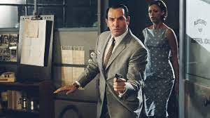

En 1955, Le Caire est un véritable nid d'espions. Tout le monde se méfie de tout le monde : Anglais, Français, Soviétiques, la famille du roi déchu Farouk qui veut retrouver son trône, les `Aigles de Kheops', secte religieuse qui veut prendre le pouvoir. Le président de la République Française, Monsieur René Coty, envoie son arme maîtresse mettre de l'ordre dans cette pétaudière au bord du chaos : Hubert Bonisseur de la Bath, dit `OSS 117'.
